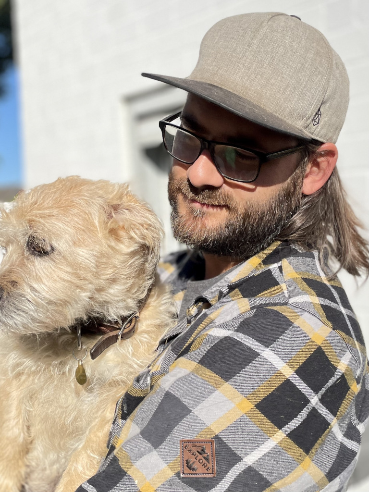

Hi, I am Henning Thies.
With over a decade of experience building modern web applications, I specialize in utilizing Ruby on Rails as my preferred framework. I have worked independently and collaboratively in small and large teams and worked as an Engineering Manager for 5 years, leading up to twelve developers onsite and remotely.
Since 2022 I returned to freelancing and have not looked back since. My passion is taking an idea from inception to production, building a solid foundation along the way, and seeing it through to completion.
- Tel: +49 (0)176 23587569
- Mail: mail@henning-thies.de